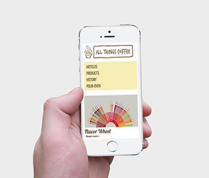
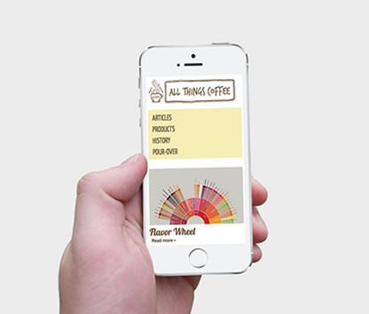

all things coffee
This 15 page website was designed with Adobe Code. The goal was to create a fully functioning, multipage website from scratch. I first coded the HTML and then created design comps in Adobe Fireworks before coding the CSS. I used responsive web design by creating media queries at three different stops.